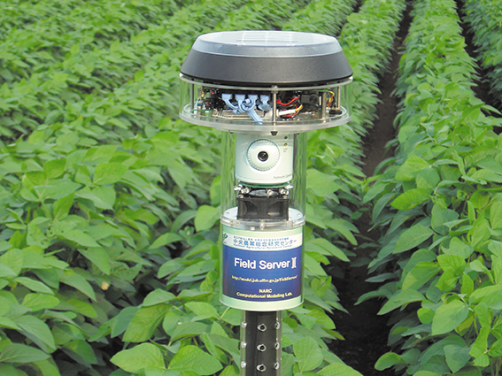
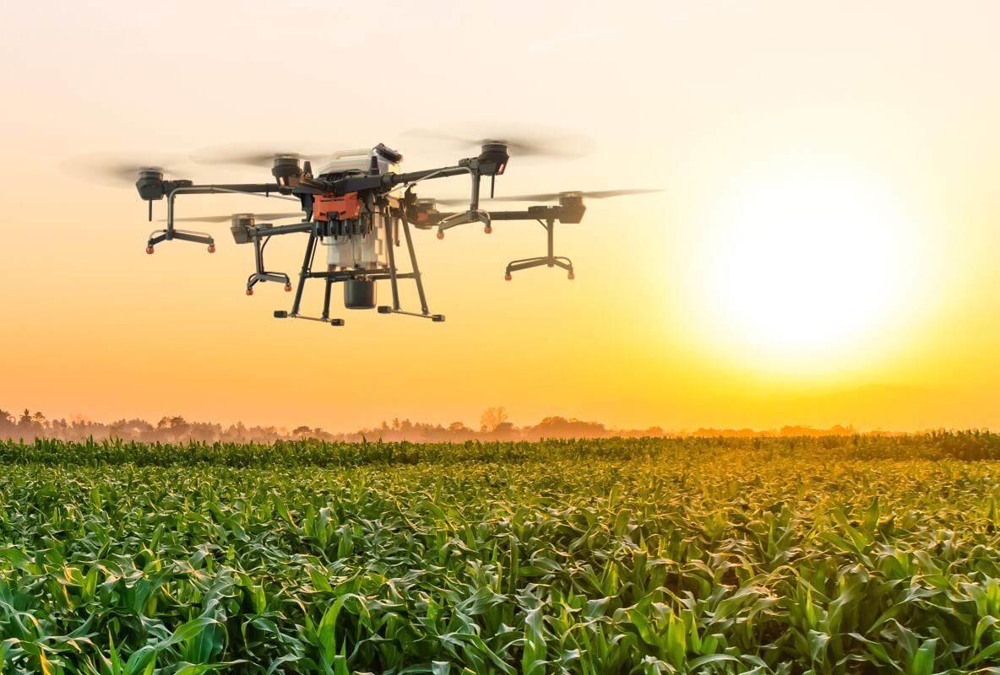
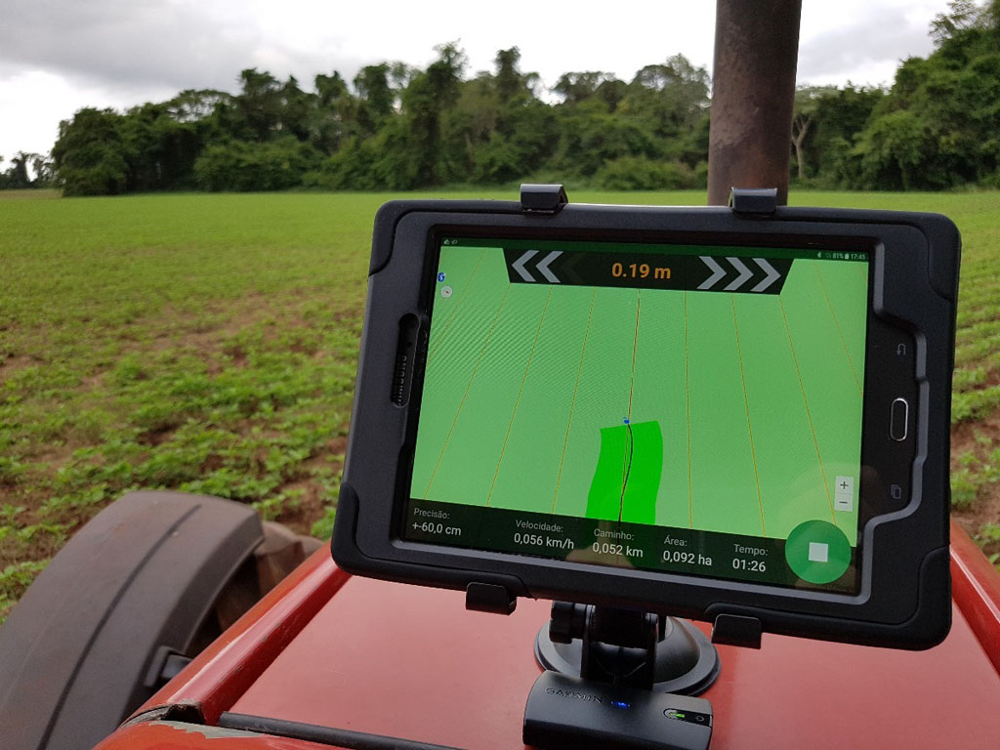
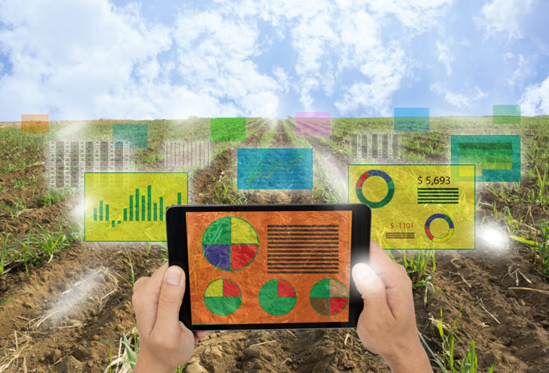

A agricultura é uma das atividades mais antigas da civilização humana, essencial para a produção de alimentos e a manutenção das sociedades. Ao longo dos séculos, essa prática evoluiu significativamente, passando de métodos rudimentares para técnicas altamente sofisticadas. Uma das inovações mais notáveis nas últimas décadas é a agricultura de precisão, uma abordagem que utiliza tecnologia avançada para otimizar o uso de recursos e melhorar a produtividade.
A agricultura de precisão é uma metodologia que utiliza tecnologias avançadas para gerenciar e otimizar a produção agrícola com maior precisão. Ela baseia-se em dados coletados de várias fontes, como sensores, drones, imagens de satélite e GPS, para tomar decisões informadas e direcionadas.
Equipamentos que monitoram condições do solo, clima e saúde das plantas em tempo real. Esses dados permitem ajustes imediatos nas práticas de cultivo.
Ferramentas que fornecem uma visão detalhada das culturas e do solo, facilitando a detecção de problemas como doenças e deficiências nutricionais.
Tecnologias que ajudam a mapear as áreas de cultivo e a planejar a aplicação de insumos com exatidão, reduzindo o desperdício e melhorando a eficiência.
Programas que processam grandes volumes de dados para gerar insights sobre o desempenho das culturas e prever necessidades futuras.
Embora a agricultura de precisão traga muitos avanços, ela também enfrenta desafios, como o custo inicial elevado das tecnologias e a necessidade de capacitação dos agricultores. No entanto, a tendência é que esses desafios sejam superados à medida que a tecnologia se torne mais acessível e a expertise em sua utilização se amplie.